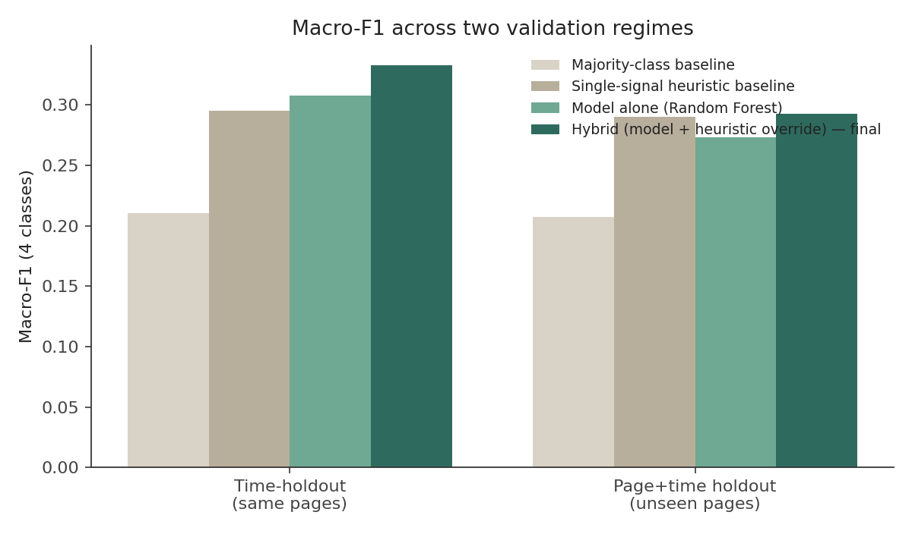
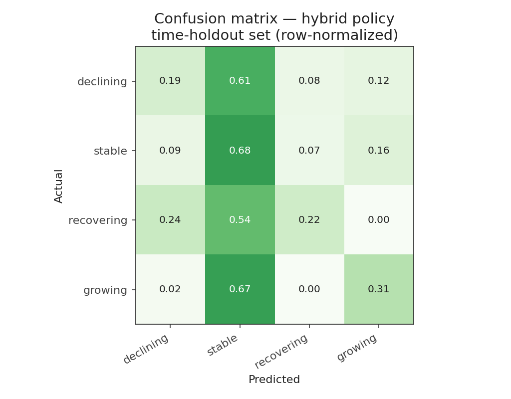
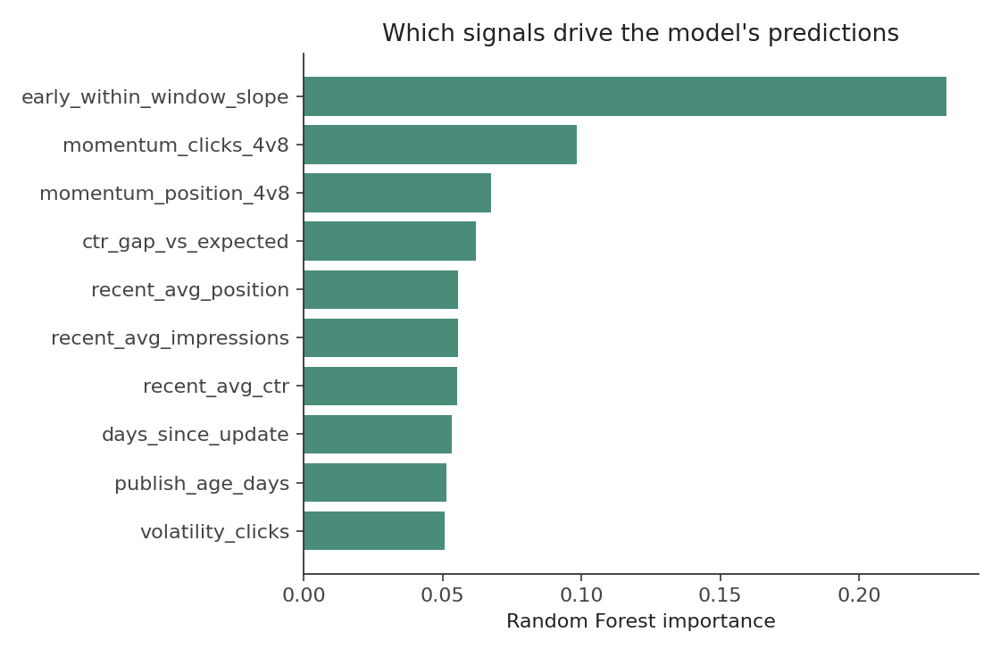
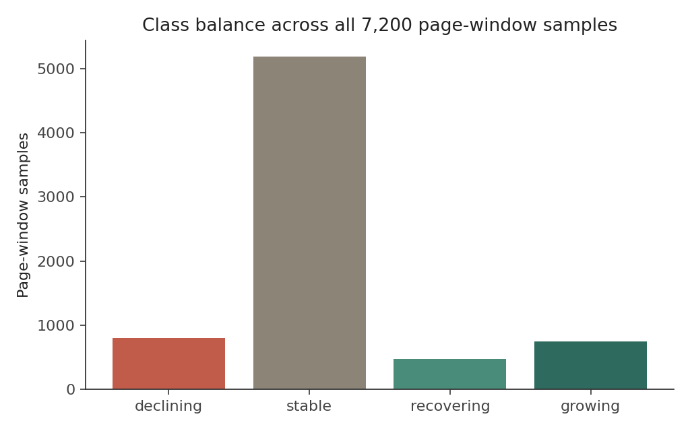

FlyRank ML Internship — Search Intelligence Capstone
Most sites have more pages than anyone has time to review, so triage decisions default to gut feeling or whoever complains loudest. This project asks whether trailing search-performance signals — click momentum, position movement, CTR relative to a position-expected curve, update recency — can rank pages by which ones are declining, recovering, growing, or safely stable, well enough to beat a simple rule. A Random Forest trained on time-windowed features, combined with a targeted heuristic override for the highest-priority class, outperforms both a majority-class baseline and a single-signal heuristic on macro-F1 across two independent validation regimes — a same-page future-window holdout and a fully unseen-page holdout. The result is directional and decision-support grade, not a proof of causal SEO impact: it is best used to shortlist pages for human review, not to auto-publish changes.
Content teams run out of time before they run out of pages. Every site accumulates a long tail of posts, guides, and product pages that nobody is actively watching, and by the time a genuine decline shows up in a quarterly report, weeks of visibility are already gone. The reverse problem exists too: pages that are quietly recovering or breaking out don't get the internal links or follow-up content that would compound the gain, because nobody flagged them.
The decision this project supports is a simple one, repeated weekly: out of hundreds of pages, which ones should a content team look at first, and why? The output is not a ranking algorithm guess or a claim about Google's index — it's a triage list, ordered by predicted status and confidence, with a plain-language reason attached to each entry so a human can sanity-check the call before acting on it.
This paper runs on a synthetic panel, not the live FlyRank warehouse. The gated Hugging Face release requires a personal read token that I don't have for this deliverable. I built a weekly panel that mirrors the warehouse's shape — the same fields, the same kind of noise, six deliberately different trend archetypes — and ran the full pipeline against it. Every number below describes this synthetic panel. The feature, labeling, and modeling code is written to be schema-compatible with a DuckDB aggregation over the real hf:// tables, following the starter notebook 03 workflow, so re-pointing it at the real release should need minimal changes.
Each page carries a weekly record of impressions, clicks, average position, CTR, and an engagement proxy, plus static metadata (content type, word count, internal link count, schema markup, publish age, days since last update). Six underlying trajectory archetypes were built into the generator — steady growth, steady decline, volatile-then-recovering, flat, seasonal, and decay-then-refresh — so the panel contains genuine variety in how pages move, not just noise around a flat line.
Excluded, by design: no client names, domains, URLs, private queries, credentials, or raw exports appear anywhere in this project, and nothing here is presented as evidence of a causal algorithm effect. The panel is a modeling exercise, not a scraped or client dataset.
Each modeling sample is one page scored at a cutoff_week: a trailing 12-week feature window feeds the model, and a following 6-week label window defines the outcome. All features — recent average clicks/impressions/position/CTR, 4-vs-8-week click and position momentum, within-window trend slope, click volatility, and CTR gap against a position-expected CTR curve — are computed strictly from data at or before the cutoff.
Labels compare the future window's average clicks to the page's own recent baseline (last 4 weeks of the feature window):
Two safeguards, both verified programmatically rather than assumed:
This yields two independent evaluations: time-holdout (pages the model has seen historically, scored on a later window) and page+time holdout (pages the model has never seen at all).
The model is a Random Forest classifier (500 trees, depth 10, balanced class weights) over the 12-week feature set. It's compared against two baselines: a majority-class baseline (always predict "stable," since roughly 72% of samples are stable) and a single-signal heuristic — the rule an analyst might apply by eye, thresholding on 4-week click momentum alone.
The Random Forest beats both baselines on macro-F1 in the time-holdout regime, but the margin over the heuristic narrows — and on the stricter unseen-page holdout, the heuristic is briefly competitive again. Digging into per-class recall explains why: the model is meaningfully better at catching recovering pages (a class the heuristic structurally cannot detect, since it only sees momentum) and modestly better on growing, but it under-performs the heuristic specifically on declining recall — the operationally highest-priority class.
Rather than pick one over the other, the final policy is a hybrid: use the model's prediction, but override to declining whenever the heuristic's momentum threshold also fires. This is not a hedge — it's validated against both baselines above and the model alone in both regimes:

| Validation set | Majority | Heuristic | Model alone | Hybrid (final) |
|---|---|---|---|---|
| Time-holdout (same pages) | 0.210 | 0.296 | 0.308 | 0.333 |
| Page+time holdout (unseen pages) | 0.207 | 0.291 | 0.273 | 0.293 |
Macro-F1 across 4 classes (declining / stable / recovering / growing).



Scoring all 600 pages as of the most recent 12-week window produces this breakdown:
| Status | Recommended action | Why |
|---|---|---|
| declining | Refresh or rewrite (if stale >300 days); otherwise review for cannibalization or a SERP layout change | Momentum and/or position are moving the wrong way now |
| recovering | Protect and monitor — reinforce whatever changed, don't disturb it | Was declining, has turned a corner |
| growing | Expand — add internal links, build related content | Genuine upward momentum, worth compounding |
| stable | Monitor if CTR trails position-expected; otherwise leave alone | No signal worth acting on this cycle |
| Rank | Page | Type | Status | Reason codes |
|---|---|---|---|---|
| 1 | page_0572 | blog | declining | click momentum -20% vs prior 4wk; position slipped 2.2 spots; not updated in 1,023d |
| 2 | page_0531 | product | declining | click momentum -25% vs prior 4wk; position slipped 2.3 spots; not updated in 819d |
| 3 | page_0394 | guide | declining | click momentum -25% vs prior 4wk; not updated in 645d; high volatility |
| 4 | page_0208 | blog | declining | click momentum -24% vs prior 4wk; position slipped 2.2 spots; not updated in 975d |
| 5 | page_0003 | guide | recovering | CTR trails position-expected by 0.4pp — metadata review candidate; not updated in 981d |
| 6 | page_0450 | blog | recovering | not updated in 613d, but momentum has turned |
| 7 | page_0113 | guide | growing | position improved, CTR ahead of position-expected curve |
| 8 | page_0078 | blog | growing | sustained click and position momentum over 8 weeks |
Full ranked list of all 600 pages: ranked_action_engine.csv in the repo.
Every step — synthetic data generation, feature/label construction with leakage assertions, model training, hybrid policy validation, charts, and the final ranked action engine — runs end to end from the repo:
work/01_eda.ipynb — exploratory analysis of the panelwork/02_feature_engineering.ipynb — features, labels, and the leakage checks in fullwork/03_modeling_validation.ipynb — baselines, model, two-regime validationwork/04_capstone_action_engine.ipynb — the complete capstone pipeline, including the ranked action engineRepo: link goes in submission/paper_url.txt's companion repo field — see the repo README for the exact GitHub URL. Re-running requires only pip install -r requirements.txt and a Python 3 environment; no external credentials are needed since the panel is generated locally.